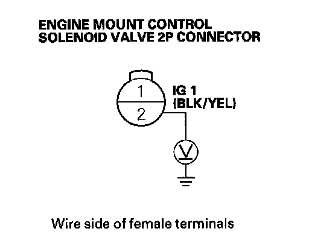
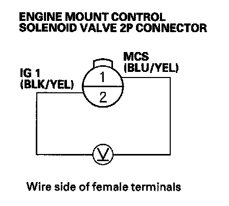
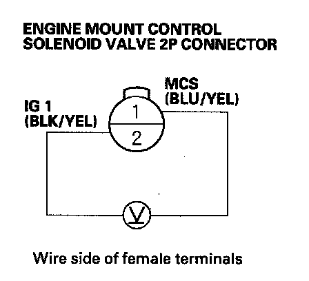
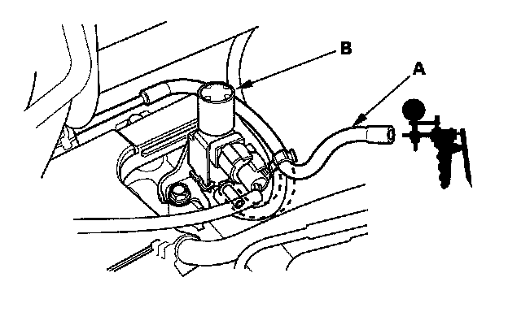
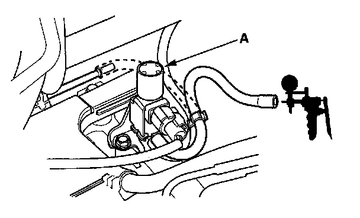

Engine Mount: Testing and Inspection
TroubleshootingSpecial Tools Required
Vacuum pump/gauge, 0 - 30 in.Hg Snap-on YA4000A or equivalent, commercially available
NOTE: Check the vacuum hoses and lines for damage and proper connections before troubleshooting.
Follow this procedure if the engine vibrates excessively when idling.
1. Start the engine, and let it idle.
2. Raise the engine speed from idling to 2,000 rpm.
3. Check the MOUNT CTRL SOL in the PGM-FI DATA LIST with the Honda Diagnostic System (HDS).
Is ON indicated at idling and OFF indicated at 2,000 rpm?
YES - Go to step 4.
NO - Update the powertrain control module (PCM) if it does not have the latest software, or substitute a known-good PCM , then recheck. If the engine mount control system works properly, and the PCM was updated, the troubleshooting is complete. If the PCM was substituted, replace the original PCM
4. Disconnect the engine mount control solenoid valve 2P connector from the engine mount control solenoid valve.
5. Turn the ignition switch ON (II).

6. Measure the voltage between engine mount control solenoid valve 2P connector terminal No. 2 and body ground.
Is there battery voltage?
YES - Go to step 7.
NO - Repair open in the wire between engine mount control solenoid valve 2P connector terminal No. 2 and No. 18 (10 A) fuse in the under-dash fuse/relay box.

7. Measure the voltage between engine mount control solenoid valve 2P connector terminals No. 1 and No. 2, with the engine at idle.
Is there battery voltage?
YES - Go to step 8.
NO - Repair open in the wire between PCM (A12) and the engine mount control solenoid valve 2P connector. If the wire is OK, update the PCM if it does not have the latest software, or substitute a known-good PCM, and recheck. If the engine mount control system works properly, and the PCM was updated, the troubleshooting is complete. If the PCM was substituted, replace the original PCM.
8. Raise the engine speed above 1,000 rpm.

9. Measure the voltage between engine mount control solenoid valve 2P connector terminals No. 1 and No. 2.
Is there battery voltage?
YES - Repair short to body ground in the wire between PCM (A12) and the engine mount control solenoid valve. If the wire is OK, update the PCM if it does not have the latest software, or substitute a known-good PCM, and recheck. If the engine mount control system works properly, and the PCM was updated, the troubleshooting is complete. If the PCM was substituted, replace the original PCM.
NO - Go to step 10.

10. Disconnect the vacuum hose (A) that is closest to the solenoid connector from the engine mount control solenoid valve (B), and connect a commercially available vacuum pump/gauge, 0 - 30 in.Hg, to the hose. Apply about 20 in.Hg of vacuum, and wait for 20 seconds.
Do the engine mount hold vacuum?
YES - Go to step 11.
NO - Either the vacuum hose or one of the engine mount has a vacuum leak. Repair as needed.
11. Release the vacuum, then apply vacuum again.
Is there a noticeable change in idle smoothness with and without vacuum applied?
YES - Go to step 12.
NO - Replace the front engine mount.

12. Connect a commercially available vacuum pump/gauge, 0 - 30 in.Hg, to the engine mount control solenoid valve (A) that is closest to the solenoid connector.
Is there manifold vacuum at idle, and a decrease in manifold vacuum when you raise the engine speed above 1,000 rpm?
YES - The system is OK.
NO - Replace the engine mount control solenoid valve.